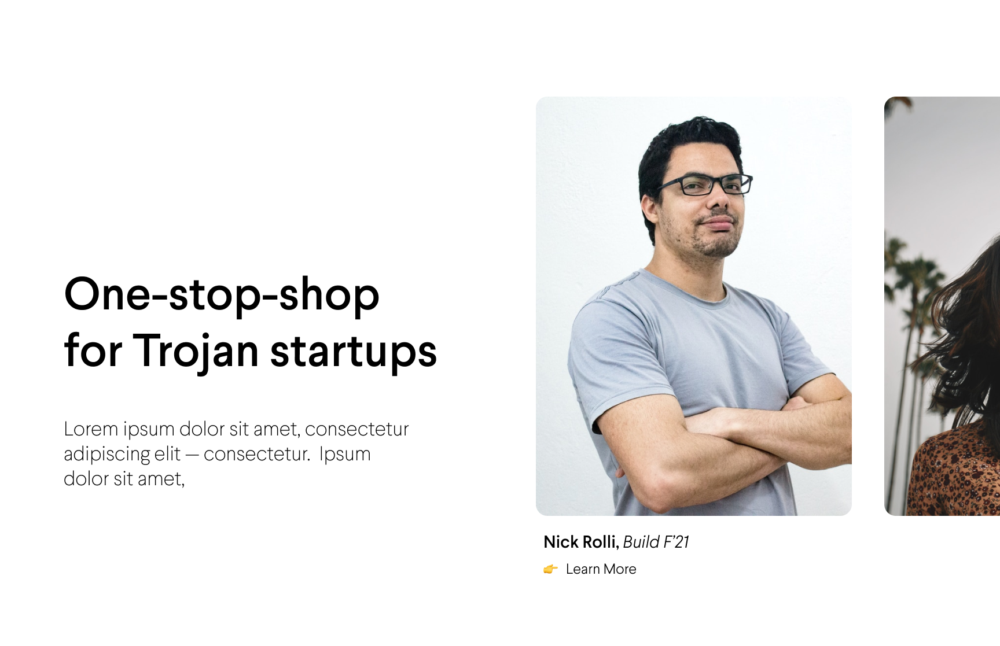
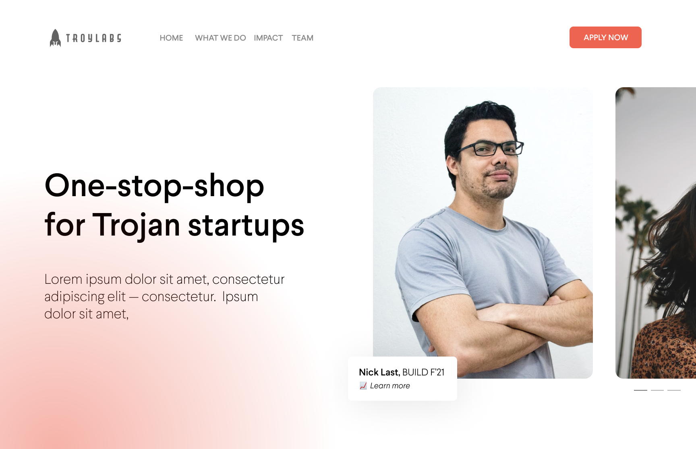
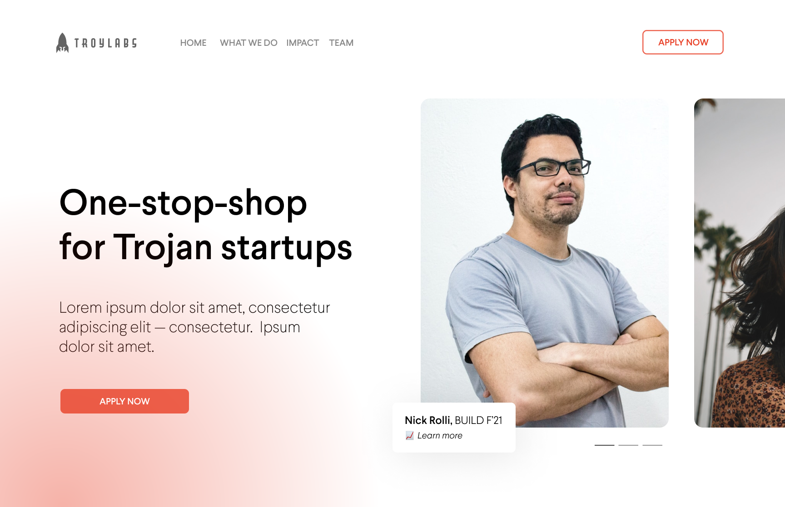

TroyLabs is a student-run startup accelerator at the University of Southern California. Each semester, we help 5 hand-picked Trojan startups — those founded by undergraduates, graduates, or alumni — transform their MVPs into seed round ready products and services. Each semester culminates with LAUNCH, a live event where founders pitch their companies in front of a panel of VC reps.
My Role & Responsibilites
At TroyLabs, I serve as a UX/UI Design Consultant and a member of TroyLabs’s internal design team. In essence, my responsibilties are 2-fold.
Consult with companies inside of the TroyLabs BUILD accelerator to build and improve their UX & UI — be it for mobile apps, web apps, marketing website, or whatever else they may need.
Generate original design and marketing content for TroyLabs. Most notably, I am in the process of re-organizing and re-designing TroyLab’s main marketing website.
Project 1: TroyLabs Website Redesign
Overview
In January of 2022, in conjuction TroyLabs’s internal design team, I began work on re-vamping TroyLabs’s main website. TroyLabs’s website was the primary platform that prospective members, companies, and interested VCs could learn more, apply for, and engage with TroyLabs initiatives.
While the design is still under construction (we dont anticpipate a formal launch for at least 3-4 weeks), this post will showcase the progress I have made up until this point.
Role
UX/UI Designer
Timeline
Winter 2022
Team
1 Full-Stack Developer, 1 UX/UI Designer
Deliverable
Marketing Website
Identfiying the Problem
TroyLabs has ambitious goals to become the flagship entrepuenarial organization within the USC community, but it has recently been stifled by communication issues. Something we hear time and time again is — “what exactly does TroyLabs do? I don’t understand it.”
In truth, TroyLabs does a little bit of everything — it is an accelerator, a pitch-competition host, an online community for start-up curious Trojans, an aspiring VC fund, and a late-stage start-up consultant. So the problem became, with TroyLabs’s far-reaching initiatives, how can we communicate what exactly TroyLabs is in a succint and concrete manner?
The old website is oudated and confusing — it certainly doesn’t help fix TroyLabs’s communication problem. So we figured that would be a god place to start.
Mapping the Solution
In order to solve TroyLabs’s communication problems, we set out build a user experience that was easy to navigate and communicated TroyLabs’s on-campus efforts in a clear, easily digestible manner. We compartmentalized our approach in three ways:
What?
What does TroyLabs do? What are its various programs and what do they offer?
Why?
Why get involved/apply for TroyLabs? What are its unique value props for Trojan founders?
How?
How does one get involved with TroyLabs? How do they navigate the application proccess?
Thinking Big Picture
Using this general structure as a jumping-off point, we mapped out how the site’s content would be organized.
Hero Design
From there, I started with the high-fidelity design of the homepage. I began with the hero.



My goal was to give the sterile branding a humanizing touch. Platforming past founders that TroyLabs has worked with not only made the branding more personal and inviting, but immediately offered an answer to TroyLab’s “what” and “why.”
Outside of founder pictures, I tried to keep the hero’s design as simple and as easy to digest as possible. The site is, after all, a simple marketing website. The goal is to provide clarity and showcase — I felt as if overly-complicated visuals would take away from that.
Homepage Prototype
After finalizing the hero, I moved onto to prototyping the rest of the home page. I added some basic interactivity for clarity when the design is passed off to the devs, but for the most part I kept the page static.
Beyond the homepage, the rest of the website is still under construction. Updates to come soon!
Project 2: UX/UI Start-Up Consulting
Overview
In January of 2022, in conjuction TroyLabs’s internal design team, I began work on re-vamping TroyLabs’s main website. TroyLabs’s website was the primary platform that prospective members, companies, and interested VCs could learn more, apply for, and engage with TroyLabs initiatives.